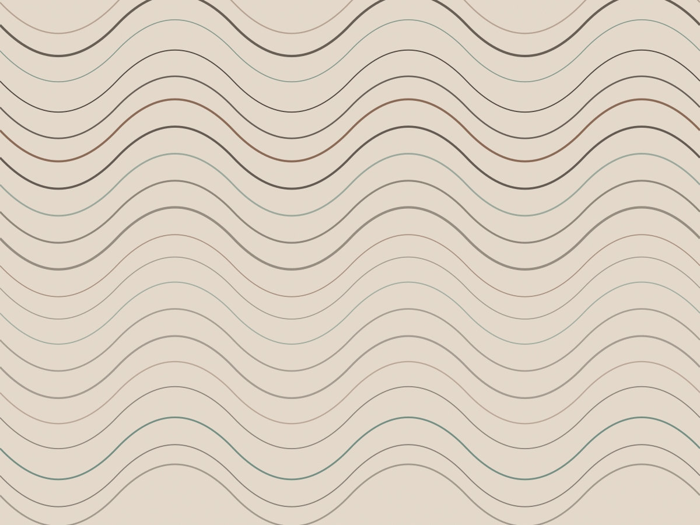

Balcão de nove lugares e quatro mesas
Doze drinks e um balcão de nove lugares
Cada dose sai da balança com 60 ml exatos, o gelo é cortado na casa em cubos de 5 cm e a carta muda quando a fruta muda — não no primeiro dia do mês.

- Ter a sáb, 18h às 1h
- Dose de 60 ml
- Gelo de bloco de 10 kg
- Doze drinks na carta
- Segundo drink a R$ 19 até 19h30
A carta, doze drinks e nenhum clássico de internet
O que está impresso abaixo é a carta de outubro. Quando o limão-cravo da feira acaba, o drink sai da folha e volta como sugestão do balcão.
Para começar
-
01
Três da Manhã
cachaça de Jequitibá, café coado gelado, licor de cacau e uma dash de pimenta-rosa
60 ml · copo baixo · cubo de 5 cm
R$ 38
-
02
Capim Santo
gin, capim-santo macerado na hora, limão-cravo e soda gelada
60 ml · copo alto · gelo em cubos
R$ 34
-
03
Rabo de Galo da Casa
cachaça envelhecida dois anos em bálsamo, vermute tinto e bitter de laranja
60 ml · copo baixo · pedra grande
R$ 32
-
04
Maracujá Azedo
vodka, maracujá fresco batido com casca, limão-taiti e clara
60 ml · taça coupé · sem gelo
R$ 36
Tropicais
-
05
Coco Queimado
cachaça, coco queimado no forno, leite condensado e canela em pau ralada por cima
60 ml · copo baixo · cubo de 5 cm
R$ 34
-
06
Butiá Sour
cachaça, butiá em calda, limão-taiti e bitter de pêssego
60 ml · copo baixo · servido com gelo moído
R$ 36
-
07
Jambu Fizz
cachaça, jambu macerado, maracujá e água com gás — formiga a língua por uns vinte segundos
60 ml · copo alto · gelo em cubos
R$ 37
-
08
Caju na Tônica
gin, caju maduro amassado com garfo, limão e tônica artesanal
60 ml · copo alto · gelo em cubos
R$ 35
Depois do jantar
-
09
Meia-Noite
rum envelhecido, café espresso da casa, açúcar mascavo e noz-moscada
60 ml · copo baixo · pedra grande
R$ 40
-
10
Café Bravo
bourbon, licor de café, bitter de cacau e casca de laranja queimada no isqueiro
60 ml · copo baixo · pedra grande
R$ 42
-
11
Ameixa Seca
conhaque, ameixa em calda, vermute branco e uma pitada de sal
60 ml · copo baixo · mexido na colher
R$ 36
-
12
Mate com Limão
mate coado frio, limão-cravo e xarope de cana — sem álcool, feito na coqueteleira
sem álcool · copo alto · gelo em cubos
R$ 18
Água com gás R$ 8 · tônica artesanal R$ 14 · café espresso R$ 9 · petisco de tábua R$ 46. Serviço de 10% é opcional e aparece destacado na conta.
Como o drink é montado
Quatro coisas acontecem entre o pedido e o copo. Nenhuma delas é enfeite.
-
A dose vai na balança
Todo destilado é pesado em balança de precisão antes de ir para a coqueteleira: 60 ml, sem arredondar no jigger. É o que mantém a força do drink igual na primeira e na última rodada da noite.
-
O gelo é feito aqui, em bloco
Bloco de 10 kg, congelado em 48 horas e cortado com serra em cubos de 5 cm. Cubo grande derrete devagar, então o drink não fica aguado na metade.
-
Doze segundos de agitação
O que leva clara ou fruta é batido por doze segundos. O que é só destilado é mexido com colher de bar, trinta voltas, para diluir sem virar espuma.
-
Peneira fina e copo gelado
O drink passa por peneira fina, que segura o gelo quebrado. O copo fica vinte minutos no freezer e a casca de fruta é torcida na hora de servir.
Ficha do balcão · drink 01
Três da Manhã, parte por parte
A receita está fixada atrás da máquina de café, com a data de quando mudou pela última vez: 14 de agosto.
- 60 ml cachaça de Jequitibá
- 25 ml café coado quatro horas antes
- 10 ml licor de cacau
- 1 dash pimenta-rosa moída na hora
- 1 cubo gelo de 5 cm, cortado na serra
- 180 ml copo baixo, gelado vinte minutos
“Perguntei pelo limão-cravo e o Rafael disse que tinha acabado na feira. Trocou por combava, explicou o que mudava no sabor e o drink ficou melhor que o da semana passada.” Olavo Pires, bebe no balcão desde 2018
Quem está no balcão
Três pessoas fixas. Quem senta na banqueta cinco costuma ser atendido pela mesma mão a noite inteira.
-
Rafael Quintela
Sócio e bartender. Escreveu a primeira carta em 2016 e assina a compra de destilado. Não faz drink fora da carta sem perguntar duas vezes.
-
Marina Sá
Sócia e responsável pela fruta. Terça de manhã está na feira da Praça Benedito Calixto escolhendo o que entra na carta da semana.
-
Caio Bento
Abre a casa às 16h: corta o gelo, corta a fruta e confere o estoque de bitter. Fecha o balcão às 1h com a contagem do caixa.
Onde e quando
- Terça a quinta
- 18h às 0h
- Sexta e sábado
- 18h às 1h
- Domingo e segunda
- fechado
Rua Fradique Coutinho, 1.247 — Pinheiros, São Paulo.
Porta de vidro entre a Simão Álvares e a Rua dos Pinheiros. Metrô Fradique Coutinho a
260 m, saída pela Rua dos Pinheiros.
- Telefone(11) 3812-4477
- WhatsApp(11) 99104-2288
- E-mailbalcao@pontotres.com.br